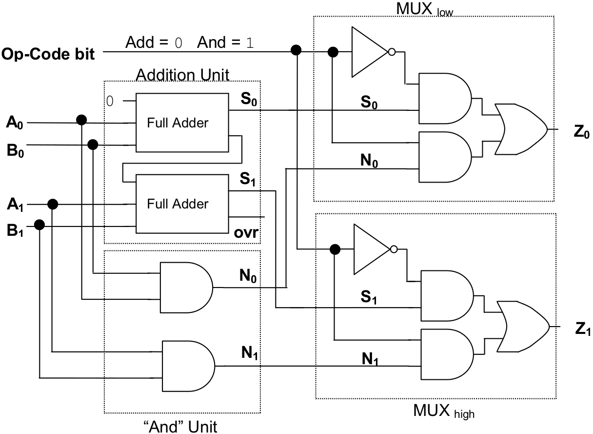
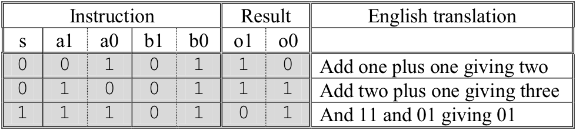

presents a circuit that implements a very simple arithmetic / logic unit. This ALU is capable of only two operations: “add” and “ and”. Thus, instead of the 4-bit op-code used by the Watson VM, this ALU uses a single-bit op-code. The circuit has been designed in such a way that “0” will be the op-code for “add” and “1” for “and”. In order to keep the circuit simple, the operands accepted by this ALU are only two bits wide.
A two-bit wide ALU capable of performing “add” and “and”
Here are some statements that could be executed by this ALU, along with the results produced, and translations of each operation into English.
The ALU contains an “addition unit” consisting of a two-bit full adder, to perform the “add” instruction; and an “ ‘and’ unit” composed of two and gates, to perform the “and” instruction. The outputs of both of these “sub-circuits” are routed into a two-bit wide 2-input multiplexer. This multiplexer, which is constructed from two single-bit wide 2-input multiplexers, labeled MUXlow and MUXhigh , passes either the result of the “add” or the result of the “and” onto the output lines. The “answer” that shows up as output depends on the value of the op-code bit. If the op-code is “0”, the results of “add” are forwarded. If the op-code is “1”, the results of “and” are forwarded.
An interesting thing to note about this particular ALU is that regardless of which op-code is sent to it, both the “add” and “and” operations are performed. The op-code simply determines which result is output.
Footnotes
[4] Though at 0.5 K bytes it is pathetically small by today’s standards. In fact, about a million times smaller than the 500 Meg machine I am writing this book on.